needed_packages <- c(
"deSolve",
"tibble",
"purrr",
"dplyr",
"magrittr",
"RColorBrewer"
)TPT model
All the data and source code files are here.
You can report errors or ask for additional analysis here.
1 Introduction
2 Packages
Required packages:
Installing the missing packages:
to_install <- needed_packages[! needed_packages %in% installed.packages()[,"Package"]]
if (length(to_install)) install.packages(to_install)Loading some packages:
library(tibble)
library(purrr)
library(dplyr)
library(magrittr)3 Utilitary functions
Default line width:
lwd_val <- 2Tuning some functions:
ode2 <- function(...) tibble::as_tibble(as.data.frame(deSolve::ode(...)))
seq2 <- function(...) seq(..., le = 512)
plotl <- function(...) plot(..., type = "l", lwd = 2)
lines2 <- function(...) lines(..., lwd = 2)
legend2 <- function(...) legend(..., bty = "n")
abline2 <- function(..., col = 2) abline(..., lwd = lwd_val, col = col)
plot2 <- function(..., col = 4) plot(..., type = "l", lwd = lwd_val, col = col)
plot3 <- function(...) plot2(..., xlab = "actual duration of treatment (days)")
legend2 <- function(...) legend(..., lty = 1, lwd = lwd_val, bty = "n")
mclapply2 <- function(...) {
parallel::mclapply(..., mc.cores = parallel::detectCores() - 1)
}
polygon2 <- function(x, y, col = 4, alpha = .2, ...) {
polygon(c(x[1], x, tail(x, 1)), c(0, y, 0), col = adjustcolor(col, alpha),
border = NA)
}
polygon3 <- function(x, y1, y2, col = 4, ...) {
polygon(c(x, rev(x)), c(y1, rev(y2)), col = col, border = NA, ...)
}4 Prophylaxis model
4.1 The Hill equation
In what follows we will model many phenomena phenomenologically using the 3-parameter monotonically increasing Hill equation, the general equation of which is
\[ y = Y\frac{x^h}{X^h + x^h} \]
where \(Y\) is the maximum value that \(y\) can take, \(X\) is the value of \(x\) at which \(y\) reaches half of its maximum value \(Y\) and \(h\) is the Hill coefficient that controls the shape of the relationship with S-shape for \(0 < h < 1\) and a simple saturating shape when \(h \ge 1\).
hill <- function(x, X, Y, h) {
x2h <- x^h
Y * x2h / (X^h + x2h)
}Let’s illustrate the properties of this equation:
xs <- seq2(0, 40)
X <- 15
Y <- .8
plot(NA, xlim = c(0, max(xs)), ylim = c(0, Y), xlab = "x values", ylab = "y values")
abline2(v = X, col = "grey")
abline2(h = Y, col = "grey")
hs <- exp(seq(-3, 3))
cols <- rev(RColorBrewer::brewer.pal(n = length(hs), "Spectral"))
walk2(hs, cols, ~ lines2(xs, hill(xs, X, Y, h = .x), col = .y))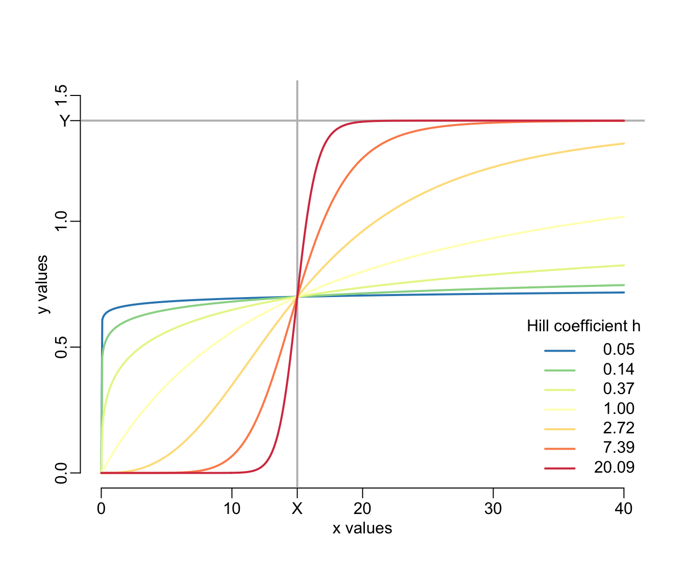
4.2 Treatment uptake
We can model the probability \(\upsilon(d)\) of treatment uptake as a function of the proposed treatment duration \(d\) using a Hill equation as so:
\[ \upsilon(d) = \frac{X_\upsilon^{h_\upsilon}}{X_\upsilon^{h_\upsilon} + d^{h_\upsilon}} \]
In R:
uptake <- function(pd, Xv, hv) {
X2h <- Xv ^ hv
X2h / (X2h + pd ^ hv)
}An example:
ds <- seq2(0, 30)
plot2(ds, uptake(ds, 15, 4), ylim = 0:1,
xlab = "duration of treatment (days)", ylab = "uptake probability")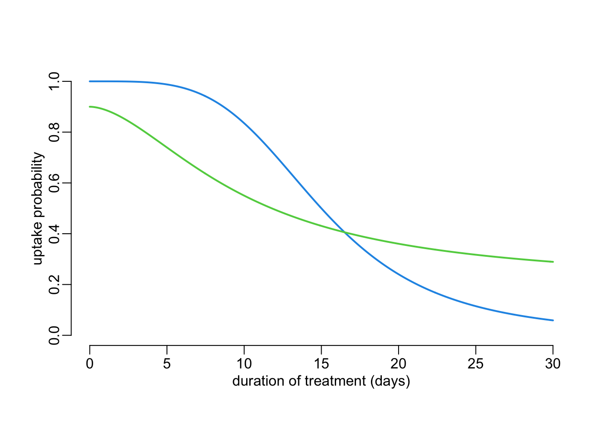
4.3 Treatment adherence
4.3.1 Conditional dropping probability
Call \(p(t)\) the probability that a person who, at day \(t\), has not stopped her treatment yet, decides to stop it. This probability could be constant and independent of the duration the person has been in the treatment. On the contrary, we could imagine that this probability could depend on the duration the person has been in the treatment. And this dependency could result from 2 effects:
- a fatigue effect whereby \(p(t)\) would increase with \(t\);
- a finish-line effect whereby \(p(t)\) would decreases nearby the end of treatment.
In order to account for all these possibilities, we model the fatigue effect as a probability \(f(t)\) increasing with time \(t\) being in the treatment according to a Hill equation:
\[ f(t) = Y_f\frac{t^{h_f}}{X_f^{h_f} + t^{h_f}} \]
and the finish-line effect as a decreasing mitigation weight \(m(t) \in [0, 1]\) of \(f(t)\), also modelled with a Hill equation as so:
\[ m(t) = 1 - Y_m\frac{t^{h_m}}{X_m^{h_m} + t^{h_m}} \]
where \(Y_m \leq 1\). From here the conditional probability \(p(t)\) reads
\[ p(t) = m(t) \times f(t) \]
Let’s look at some examples:
probabilities <- function(
pd = 40, # proposed duration of treatment
Xf = 25, Yf = .8, hf = 7, # fatigue
Xmp = .875, Ym = 1, hm = 50, # mitigation of fatigue
lwd = 2,
ylim = 0:1,
add = FALSE,
lgnd = TRUE) { # whether to add the legend to the plot or not
Xm <- Xmp * pd
ts <- seq2(0, pd)
fatigue <- hill(ts, Xf, Yf, hf)
mitigation <- 1 - hill(ts, Xm, Ym, hm)
if (! add) plot(ts, fatigue, ylim = ylim, col = 3, type = "l", lwd = lwd,
xlab = "time in treatment (days)",
ylab = "probability or mitigation factor")
lines2(ts, mitigation, col = 2)
lines2(ts, mitigation * fatigue, col = 4)
if (lgnd & ! add)
legend2("left", col = c(3, 2, 4),
legend = c("fatigue", "mitigation of fatigue", "dropping probability"))
}Executing the function:
probabilities()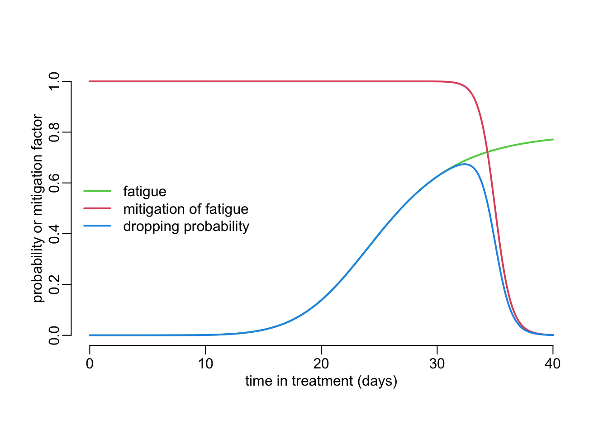
Note that this model accounts for the special case where \(p(t)\) is a constant independent of time:
probabilities(hf = 0, hm = 0, Ym = .05, Yf = .4)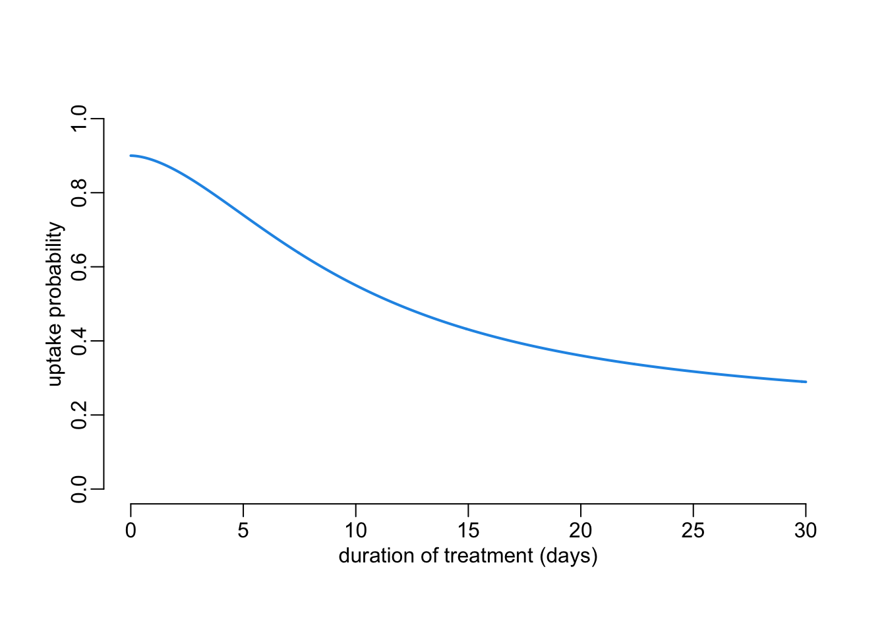
4.3.2 Duration of treatment distribution
From \(p(t)\) we can express the probability that somebody stops her treatment exactly at time \(t\) as
\[ P(t) = p(t)\prod_{x=0}^{{}^{-}t}(1 - p(x))^{dx} \]
The density of probability of the actual duration of treatment (aka effective duration of treatment) can then be expressed by:
\[ \varphi(t, d) = \frac{P(t)}{\int_{0}^d P(x)dx} \]
where \(d\) is the proposed duration of treatment. Let’s see this in R. First a function that computes the dropping probability:
dropping_probability <- function(
pd = 40, # proposed duration of treatment
Xf = 25, Yf = .8, hf = 7, # fatigue
Xmp = .875, Ym = 1, hm = 50, # mitigation of fatigue
by = pd / (le - 1), le = 512) { # sampling day in the treatment
ts <- seq(0, pd, by)
tibble(x = ts,
y = hill(ts, Xf, Yf, hf) * (1 - hill(ts, Xmp * pd, Ym, hm)))
}This is what it gives:
dropping_probability()# A tibble: 512 × 2
x y
<dbl> <dbl>
1 0 0
2 0.0783 2.36e-18
3 0.157 3.02e-16
4 0.235 5.16e-15
5 0.313 3.87e-14
6 0.391 1.84e-13
7 0.470 6.61e-13
8 0.548 1.94e-12
9 0.626 4.95e-12
10 0.705 1.13e-11
# ℹ 502 more rowswhere the first column is the time \(t\) in treatment and the second column the conditional probability \(p(t)\) of dropping. This function is used by the following one to compute the probability distribution of the effective duration of treatment:
effective_duration <- function(
pd = 40, # proposed duration of treatment
Xf = 25, Yf = .8, hf = 7, # fatigue
Xmp = .875, Ym = 1, hm = 50, # mitigation of fatigue
by = pd / (le - 1), le = 512) { # sampling effective durations of treatment
dp <- dropping_probability(pd, Xf, Yf, hf, Xmp, Ym, hm, by, le)
y <- dp$y
dens <- c(y[1], y[-1] * cumprod(1 - y[-length(y)]))
tibble(x = dp$x,
y = dens / sum(dens))
}Let’s try it:
with(effective_duration(), {
plot3(x, y, ylab = "probability density")
polygon2(x, y)
})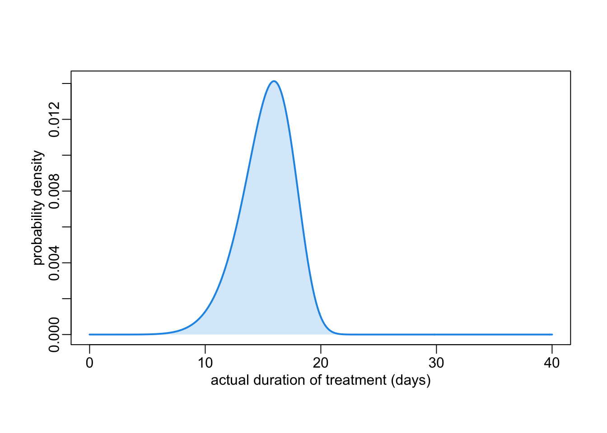
A function that helps visualizing the relationship between proposed duration of treatment (vertical grey lines) and the distribution of the actual duration of treatment (in blue):
explore_dropping <- function(
Xf = 200, Yf = .15, hf = 7,
Xmp = .875, Ym = 1, hm = 50,
by = .1, ylim = c(0, .2),
proposed_durations = c(20, 40, seq(60, 100, 10))) {
proposed_durations <- sort(proposed_durations)
eds <- map(proposed_durations,
~ effective_duration(.x, Xf, Yf, hf, Xmp, Ym, hm, by))
opar <- par(mfrow = 2:1, plt = c(.1, .96, .21, .93))
probabilities(tail(proposed_durations, 1),
Xf, Yf, hf, Xmp, Ym, hm, lwd = 4, ylim = ylim, lgnd = FALSE)
walk(head(proposed_durations, -1),
~ probabilities(.x, Xf, Yf, hf, Xmp, Ym, hm, add = TRUE))
plot(NA,
xlim = c(0, max(proposed_durations)),
ylim = c(0, max(unlist(map(eds, ~ .x$y)))),
xlab = "effective duration of treatment (days)",
ylab = "probability density")
walk(eds, ~ with(.x, {
lines2(.x$x, .x$y, col = 4)
polygon2(x, y)
}))
abline2(v = proposed_durations, col = "grey")
par(opar)
}Let’s play with it:
explore_dropping(Xmp = .95, hm = 50, ylim = c(0, .0007))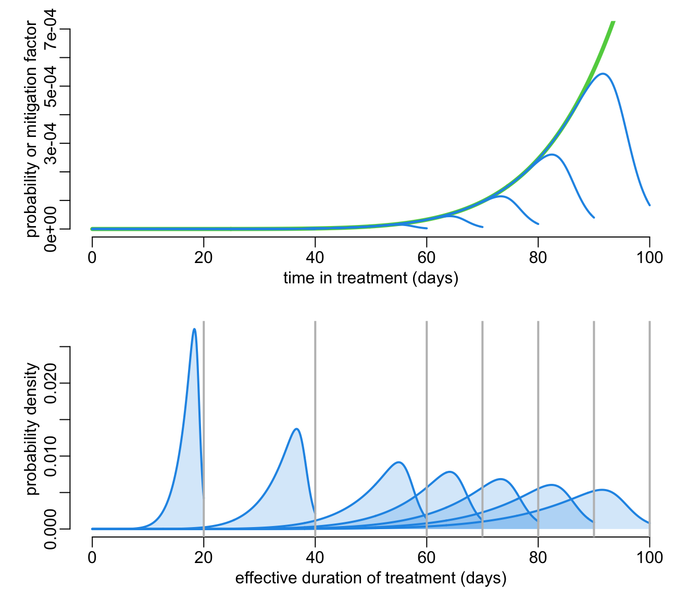
A function to draw durations from the distribution:
draw_durations <- function(
pd = 40, # proposed duration of treatment
Xf = 25, Yf = .8, hf = 7, # fatigue
Xmp = .875, Ym = 1, hm = 50, # mitigation of fatigue
by = pd / (le - 1), le = 512, # sampling effective durations of treatment
n = 1000) { # number to draw
with(effective_duration(pd, Xf, Yf, hf, Xmp, Ym, hm, by, le), sample(x, n, TRUE, y))
} Let’s try it:
draw_durations(n = 10) [1] 19.09980 16.12524 15.65558 14.79452 15.65558 18.55186 18.23875 12.13307
[9] 14.16830 15.890414.4 Treatment efficacy
We can assume that the treatment efficacy \(\varepsilon(\phi)\) as a function of the actual duration \(\phi\) of treatment also follows a Hill equation:
\[ \varepsilon(\phi) = Y_\varepsilon\frac{\phi^{h_\varepsilon}}{X_\varepsilon^{h_\varepsilon} + \phi^{h_\varepsilon}} \]
An illustration:
ts <- seq2(0, 30)
plot3(ts, hill(ts, 10, 1, 1), ylim = 0:1, ylab = "treatment efficacy")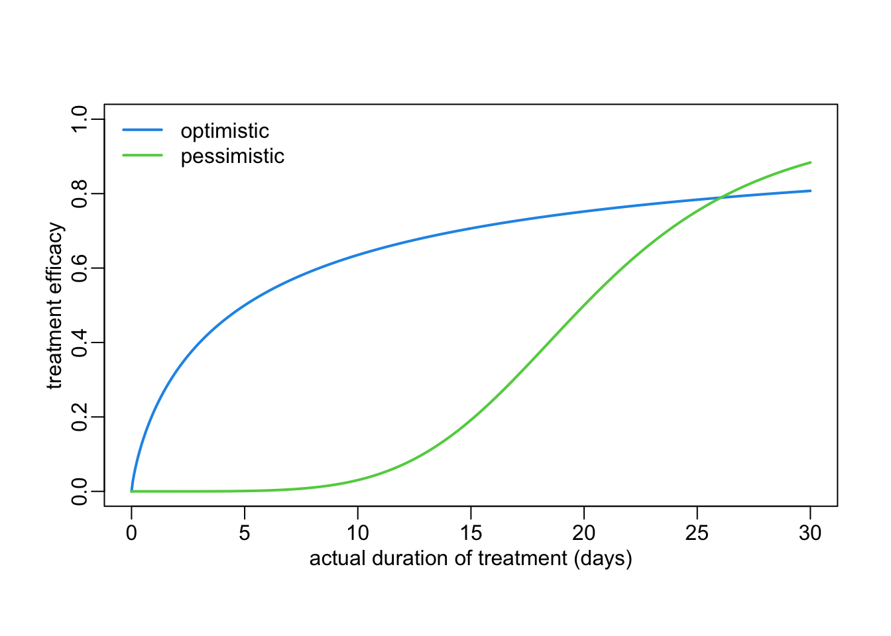
4.5 Full prophylaxis
The \(\pi\) proportion of the epidemiological model can now be expressed as:
\[ \pi(d, \theta_\upsilon, \theta_\varepsilon) = \tau \times \upsilon(d, \theta_\upsilon) \times \varepsilon(d, \theta_\varepsilon) \]
where \(\tau\) is the proportion of recent infections that can be identified through contact tracing and \(d\) is the proposed duration of treatment. In R:
pi_value <- function(
tau = .99,
pd = 10,
Xv = 15, hv = 4,
Xf = 200, Yf = .15, hf = 7,
Xmp = .875, Ym = 1, hm = 50,
Xe = 10, Ye = 1, he = 1,
by = pd / (le - 1), le = 512,
n = 1000) {
tau *
uptake(pd, Xv, hv) *
hill(draw_durations(pd, Xf, Yf, hf, Xmp, Ym, hm, by, le, n), Xe, Ye, he)
}Let’s try it:
tau_vals <- c(.2, .5, .75, .9, 1)
out1 <- tau_vals |>
map(~ pi_value(tau = .x, pd = 10, n = 1e4, le = 1e6)) |>
map(density)
plot2(NA, xlim = 0:1, ylim = c(0, max(unlist(map(out1, extract2, "y")))),
xlab = "proportion of new infections sterilized", ylab = "density of probability")
walk2(out1, seq_along(tau_vals), ~ with(.x, {
polygon2(x, y, col = .y)
lines2(x, y, col = .y)
}))
add_legend_sterilization <- function(...) {
legend2("topright", legend = paste0(rev(100 * tau_vals), "%"),
col = rev(seq_along(tau_vals)),
title = "percentage of recent infections identified")
}
add_legend_sterilization()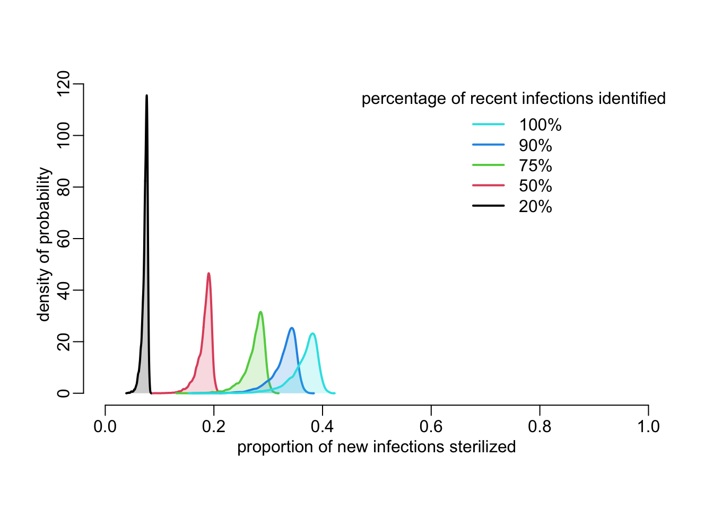
A function that plot a quantile distribution along the \(y\)-axis:
quantplot <- function(x, y, probs = c(.025, seq(.05, .95, .05), .975),
col = adjustcolor(4, .07)) {
y <- map_dfr(y, quantile, probs)
nbcol <- ncol(y)
nb <- (nbcol - (nbcol %% 2)) / 2 - 1
walk(0:nb, ~ polygon3(x, y[[1 + .x]], y[[nbcol - .x]], col = col))
}Let’s generate the distribution of the proportion of new infections sterilized for various proposed durations of treatment (about 1’40”):
pd_vals <- seq(1, 40, le = 512)
out <- map(tau_vals,
~ mclapply2(pd_vals,
function(x) pi_value(pd = x, tau = .x, n = 1e4, le = 1e6)))This gives:
plot(NA, xlim = c(0, 45), ylim = 0:1,
xlab = "proposed duration of treatment (days)",
ylab = "proportion of new infections sterilized")
walk2(out,
seq_along(out),
~ quantplot(pd_vals, .x, probs = seq(.025, .975, le = 75),
col = adjustcolor(.y, .03)))
add_legend_sterilization()5 Epidemiological consequences
5.1 A minimalist SID

5.1.1 Dynamics
\[ \begin{align} \frac{dS}{dt} &= \gamma I + \alpha D - (1 - \pi) \beta DS \\ \frac{dI}{dt} &= (1 - \pi) \beta DS - (\delta + \gamma) I \\ \frac{dD}{dt} &= \delta I - \alpha D \end{align} \]
R code:
sid_dyn <- function(N, I0 = 0, D0, beta, gamma, pi, delta, alpha, times) {
ode2(c(S = N - I0 - D0, I = I0, D = D0),
times,
function(time, state, pars) {
with(as.list(c(state, pars)), {
infection <- (1 - pi) * beta * D * S
dS <- gamma * I + alpha * D - infection
dI <- infection - (delta + gamma) * I
dD <- delta * I - alpha * D
list(c(dS, dI, dD))
})
},
c(beta = beta, gamma = gamma, pi = pi, delta = delta, alpha = alpha))
}5.1.2 Equilibrium
\[ \begin{align} S^* &= N - I^* - D^* \\ I^* &= \frac{\alpha}{\delta} D^* \\ D^* &= \frac{\delta}{\alpha + \delta} N - \frac{\alpha}{\alpha + \delta} \frac{\delta + \gamma}{(1 - \pi)\beta} \end{align} \]
R code:
sid_equ <- function(N, beta, gamma, pi, delta, alpha) {
Dstar <- delta * N / (alpha + delta) - alpha * (delta + gamma) /
((alpha + delta) * (1 - pi) * beta)
Istar <- alpha * Dstar / delta
c(S = N - Istar - Dstar, I = Istar, D = Dstar)
}A function that plots the dynamics and equilibrium values of the infection prevalence and the disease incidence and prevalence:
plot_sid_dyn_equ <- function(
N = 1e5,
D0 = 350,
beta = .000001,
gamma = 0,
pi = 0,
delta = .0001,
alpha = 1 / 70,
times = seq2(0, 25000)) {
sims <- sid_dyn(N = N, I0 = 0, D0 = D0, beta = beta, gamma = gamma, pi = pi,
delta = delta, alpha = alpha, times = times)
equs <- sid_equ(N = N, beta = beta, gamma = gamma, pi = pi,
delta = delta, alpha = alpha)
plotl2 <- function(...) plotl(..., xlab = "time (year)")
opar <- par(mfrow = c(1, 3), cex = 1, plt = c(.25, .95, .25, .9))
with(sims, {
plotl2(time, I, col = 2, ylab = "infection prevalence")
abline(h = equs["I"], col = 2)
plotl2(time, D, col = 3, ylab = "disease prevalence")
abline(h = equs["D"], col = 3)
plotl2(time, delta * I, col = 4, ylab = "yearly disease incidence")
abline(h = delta * equs["I"], col = 4)
})
par(opar)
}Let’s do some verification:
plot_sid_dyn_equ()5.1.3 Calibration
In absence of TPT (i.e. \(\pi = 0\)), let’s further assume that \(\gamma = 0\). Let’s call \(d\) the yearly disease incidence. Then,
\[ \begin{align} \delta &= \frac{d^*}{I^*} \\ \alpha &= \frac{D^*}{d^*} \\ \beta &= \frac{N}{\alpha} - \frac{\alpha + \delta}{\alpha \delta} D^* \end{align} \]
Corresponding R code:
sid_param_val <- function(inf_prev, dis_prev, dis_incd, N = 1e5) {
delta <- dis_incd / inf_prev
alpha <- dis_incd / dis_prev
c(alpha = alpha,
beta = alpha * delta / (delta * N - (alpha + delta) * dis_prev),
delta = delta)
}In Vietnam:
- prevalence of infection: somewhere between 10 and 30% of the population?
- prevalence of disease: 176 / 100,000
- yearly incidence of disease: 322 / 100,000
(sid_p_val <- sid_param_val(2e4, 176, 322)) alpha beta delta
1.829545e+00 2.291974e-05 1.610000e-02 Let’s see:
plot_sid_dyn_equ(D0 = 176,
beta = sid_p_val[["beta"]],
delta = sid_p_val[["delta"]],
alpha = sid_p_val[["alpha"]],
times = seq2(0, 3000))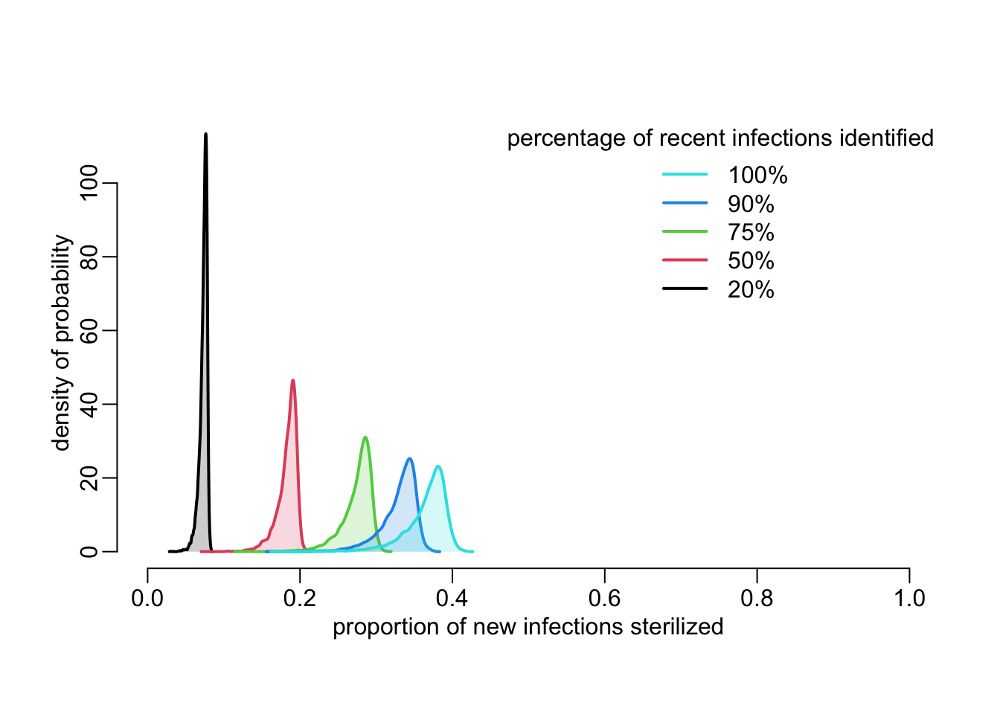
5.2 A two-speed SIID
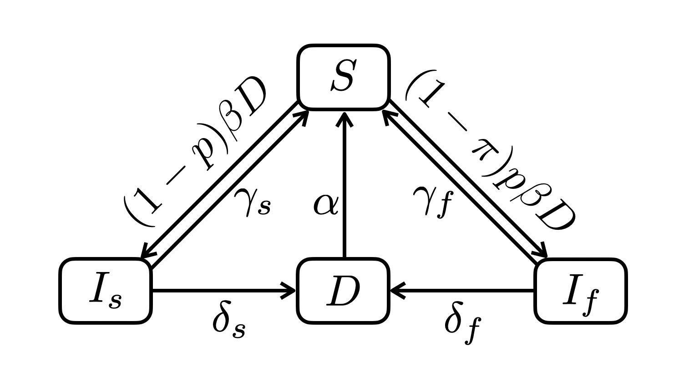
5.2.1 Dynamics
\[ \begin{align} \frac{dS}{dt} &= \gamma_s I_s + \gamma_f I_f + \alpha D - (1 - p\pi)\beta D S\\ \frac{dI_s}{dt} &= (1 - p) \beta D S - (\gamma_s + \delta_s) I_s \\ \frac{dI_f}{dt} &= (1-\pi) p \beta D S - (\gamma_f + \delta_f) I_f \\ \frac{dD}{dt} &= \delta_s I_s + \delta_f I_f - \alpha D \end{align} \]
with \(N = S + I_s + I_f + D\). R code:
siid_dyn <- function(N = 1e5, Is0 = 0, If0 = 0, D0,
pi, p, beta, gammas, gammaf, deltas, deltaf, alpha, times) {
ode2(c(S = N - Is0 - If0 - D0, Is = Is0, If = If0, D = D0),
times,
function(time, state, pars) {
with(as.list(c(state, pars)), {
infection <- beta * D * S
dS <- gammas * Is + gammaf * If + alpha * D - (1 - p * pi) * infection
dIs <- (1 - p) * infection - (gammas + deltas) * Is
dIf <- (1 - pi) * p * infection - (gammaf + deltaf) * If
dD <- deltas * Is + deltaf * If - alpha * D
list(c(dS, dIs, dIf, dD))
})
},
c(pi = pi, p = p, beta = beta, gammas = gammas, gammaf = gammaf,
deltas = deltas, deltaf = deltaf, alpha = alpha))
}5.2.2 Equilibrium
\[ \begin{align} A &= (\alpha\delta_f + [1 + \delta_s]\gamma_f)[1 - p] + (\alpha\delta_s + [\alpha + \delta_f]\gamma_s)[1 - \pi]p + [1 - p\pi]\delta_s\delta_f \\ D^* &= \frac{[1 - p]\delta_s\gamma_f + [1 - \pi]p\gamma_s\delta_f + [1 - p\pi]\delta_s\delta_f} {A} N - \frac{\delta_s\gamma_f + \gamma_s\delta_f + \delta_s\delta_f}{A} \frac{\alpha}{\beta} \\ I_f^* &= \frac{(N - [\alpha / \delta_s + 1]D^*)(1 - \pi)p\beta D^*} {\gamma_f + \delta_f + (1 - \delta_f / \delta_s)(1 - \pi)p\beta D^*} \\ I_s^* &= \frac{\alpha D^* - \delta_f I_f^*}{\delta_s} \\ S^* &= N - I_s^* - I_f^* - D^* \end{align} \]
R code:
siid_equ <- function(N = 1e5, pi, p, beta, gammas, gammaf, deltas, deltaf, alpha) {
A <- (alpha * deltaf + (1 + deltas) * gammaf) * (1 - p) +
(alpha * deltas + (alpha + deltaf) * gammas) * (1 - pi) * p +
(1 - p * pi) * deltas * deltaf
D <- (((1 - p) * deltas * gammaf +
(1 - pi) * p * gammas * deltaf +
(1 - p * pi) * deltas * deltaf) * N -
(deltas * gammaf + gammas * deltaf + deltas * deltaf) * alpha / beta) / A
If <- (N - (alpha / deltas + 1) * D) * (1 - pi) * p * beta * D /
(gammaf + deltaf + (1 - deltaf / deltas) * (1 - pi) * p * beta * D)
Is <- (alpha * D - deltaf * If) / deltas
c(S = N - Is - If - D,
Is = Is,
If = If,
D = D)
}A function that plots the dynamics and equilibrium values of the infection prevalence and the disease incidence and prevalence:
plot_siid_dyn_equ <- function(
N = 1e5,
Is0 = 0,
If0 = 0,
D0 = 350,
pi = 0,
p = .9,
beta = 1e-6,
gammas = 0,
gammaf = 0,
deltas = 1e-6,
deltaf = 1e-4,
alpha = 1 / 70,
times = seq2(0, 1000000)) {
sims <- siid_dyn(N, Is0, If0, D0,
pi, p, beta, gammas, gammaf, deltas, deltaf, alpha, times)
equs <- siid_equ(N, pi, p, beta, gammas, gammaf, deltas, deltaf, alpha)
plotl2 <- function(...) plotl(..., xlab = "time (year)")
opar <- par(mfrow = c(1, 4)) #, cex = 1, plt = c(.25, .95, .25, .9))
with(sims, {
incidence_dyn <- deltas * Is + deltaf * If
incidence_equ <- deltas * equs["Is"] + deltaf * equs["If"]
plotl2(time, Is + If, col = 1, ylab = "infection prevalence")
abline(h = equs["Is"] + equs["If"], col = 1)
plotl2(time, D, col = 2, ylab = "disease prevalence")
abline(h = equs["D"], col = 2)
plotl2(time, incidence_dyn, col = 3, ylab = "yearly disease incidence")
abline(h = incidence_equ, col = 3)
plotl2(time, deltaf * If / incidence_dyn, col = 4,
ylab = "proportion of fast infections")
abline(h = deltaf * equs["If"] / incidence_equ, col = 4)
})
par(opar)
}Let’s see:
plot_siid_dyn_equ()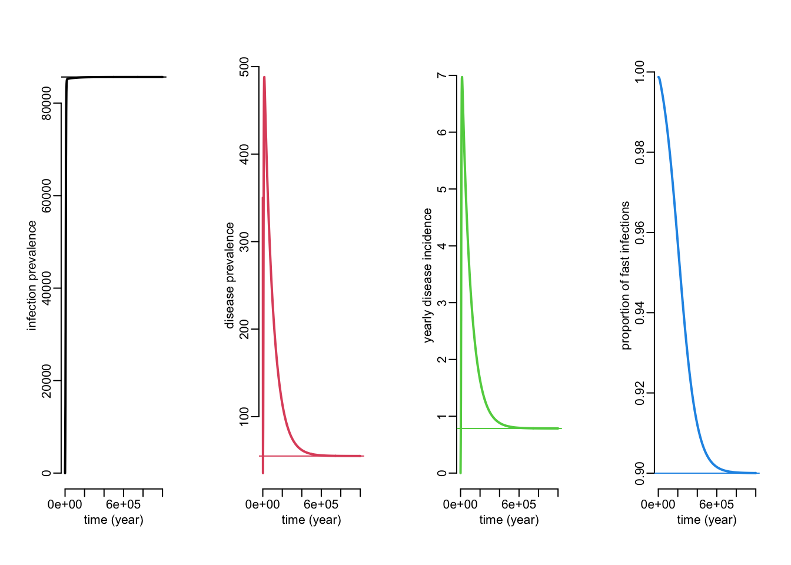
Let’s verify that we get the same result as the SID when \(p = 1\):
N <- 1e5
beta <- .000001
gamma <- gammas <- gammaf <- 0
pi <- 0
delta <- deltas <- deltaf <- .0001
alpha <- 1 / 70
p <- 1
sid_equ(N, beta, gamma, pi, delta, alpha) S I D
14285.7143 85118.4565 595.8292 siid_equ(N, pi, p, beta, gammas, gammaf, deltas, deltaf, alpha) S Is If D
1.428571e+04 -1.243450e-10 8.511846e+04 5.958292e+02 5.2.3 Calibration
When \(\pi = 0\), we can re-arrange the equilibrium equations so that we have:
\[ \begin{align} D^* &= \frac{ ([\gamma_f + \delta_f]\delta_s + [\gamma_s \delta_f - \delta_s \gamma_f]p)\beta N - (\gamma_s \delta_f + [\gamma_f + \delta_f]\delta_s)\alpha}{ (\alpha + \delta_s)\delta_f + (1 - p)(1 + \delta_s)\gamma_f + ([\delta_f + \alpha]\gamma_s - [\delta_f - \delta_s]\alpha)p}\frac{1}{\beta} \\ I^* &= \frac{(N - D^*)(\delta_f - \delta_s)p\beta - (\gamma_f + \delta_f)\alpha} {(\delta_f - \delta_s)p\beta D^* - (\gamma_f + \delta_f)\delta_s}D^* \\ d_f^* &= \frac{(\delta_s N - (\alpha + \delta_s)D^*)\delta_f p\beta D^*} {(\gamma_f + \delta_f)\delta_s - (\delta_f - \delta_s)p\beta D^*} \\ d_s^* &= \left( \alpha + \frac{(\delta_s N - [\alpha + \delta_s] D^*)p\beta\delta_f} {(\delta_f - \delta_s)p\beta D^* - (\gamma_f + \delta_f)\delta_s} \right) D^* \end{align} \]
where \(I^*\) and \(D^*\) are the infection and disease prevalences and \(d_f^*\) and \(d_s^*\) are the disease incidences from recent and ancient infections respectively. In R, this is what it looks like:
siid_equ2 <- function(N = 1e5, p, beta, gammas, gammaf, deltas, deltaf, alpha) {
D <- (((gammaf + deltaf) * deltas +
(gammas * deltaf - deltas * gammaf) * p) * beta * N -
(gammas * deltaf + (gammaf + deltaf) * deltas) * alpha) /
(((alpha + deltas) * deltaf + (1 - p) * (1 + deltas) * gammaf +
((deltaf + alpha) * gammas - (deltaf - deltas) * alpha) * p) * beta)
c(D = D,
I = ((N - D) * (deltaf - deltas) * p * beta - (gammaf + deltaf) * alpha) * D /
((deltaf - deltas) * p * beta * D - (gammaf + deltaf) * deltas),
df = (deltas * N - (alpha + deltas) * D) * deltaf * p * beta * D /
((gammaf + deltaf) * deltas - (deltaf - deltas) * p * beta * D),
ds = D * (alpha + (deltas * N - (alpha + deltas) * D) * p * beta * deltaf /
((deltaf - deltas) * p * beta * D - (gammaf + deltaf) * deltas))
)
}Verification:
siid_equ(N = 1e5, pi = 0, p = .9, beta = .00001, gammas = 1 / 70, gammaf = 0,
deltas = 1 / 50, deltaf = 1 / 5, alpha = 1 / 70) S Is If D
1490.683 3856.629 5950.227 88702.461 siid_equ2(N = 1e5, p = .9, beta = .00001, gammas = 1 / 70, gammaf = 0,
deltas = 1 / 50, deltaf = 1 / 5, alpha = 1 / 70) D I df ds
88702.46085 9806.85592 1190.04544 77.13257 Another verification:
plot_siid_dyn_equ2 <- function(
N = 1e5,
Is0 = 0,
If0 = 0,
D0 = 350,
pi = 0,
p = .9,
beta = 1e-6,
gammas = 0,
gammaf = 0,
deltas = 1e-6,
deltaf = 1e-4,
alpha = 1 / 70,
times = seq2(0, 1000000)) {
sims <- siid_dyn(N, Is0, If0, D0,
pi, p, beta, gammas, gammaf, deltas, deltaf, alpha, times)
equs <- siid_equ2(N, p, beta, gammas, gammaf, deltas, deltaf, alpha)
plotl2 <- function(...) plotl(..., xlab = "time (year)")
opar <- par(mfrow = c(1, 4)) #, cex = 1, plt = c(.25, .95, .25, .9))
with(sims, {
plotl2(time, Is + If, col = 1, ylab = "infection prevalence")
abline(h = equs["I"], col = 1)
plotl2(time, D, col = 2, ylab = "disease prevalence")
abline(h = equs["D"], col = 2)
plotl2(time, deltaf * If, col = 3, ylab = "yearly fast disease incidence")
abline(h = equs["df"], col = 3)
plotl2(time, deltas * Is, col = 4, ylab = "yearly slow disease incidence")
abline(h = equs["ds"], col = 4)
})
par(opar)
}plot_siid_dyn_equ2()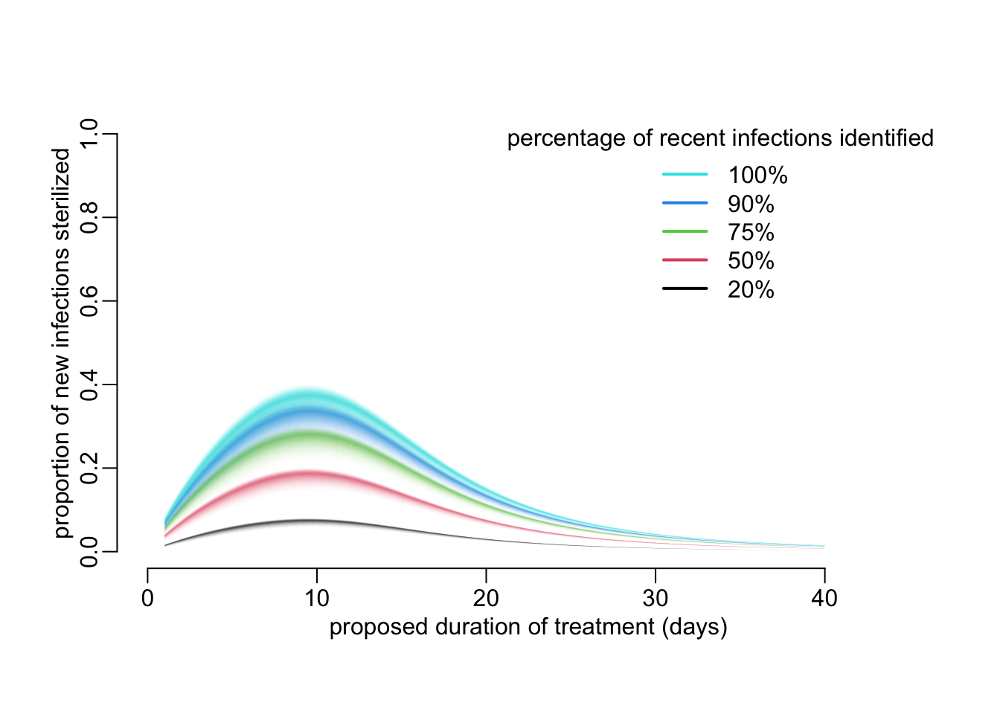
If, additionally, \(\gamma_s = \gamma_f = 0\), then the above equilibrium becomes:
\[ \begin{align} D^* &= \frac{ \delta_f\delta_s(\beta N - \alpha)}{ (\alpha + \delta_s)\delta_f - (\delta_f - \delta_s)\alpha p}\frac{1}{\beta} \\ I^* &= \frac{(N - D^*)(\delta_f - \delta_s)p\beta - \delta_f\alpha} {(\delta_f - \delta_s)p\beta D^* - \delta_f\delta_s}D^* \\ d_f^* &= \frac{(\delta_s N - (\alpha + \delta_s)D^*)\delta_f p\beta D^*} {\delta_f\delta_s - (\delta_f - \delta_s)p\beta D^*} \\ d_s^* &= \left( \alpha + \frac{(\delta_s N - [\alpha + \delta_s] D^*)p\beta\delta_f} {(\delta_f - \delta_s)p\beta D^* - \delta_f\delta_s} \right) D^* \end{align} \]
Numerical verification:
siid_equ3 <- function(N = 1e5, p, beta, deltas, deltaf, alpha) {
D <- deltaf * deltas * (beta * N - alpha) /
(((alpha + deltas) * deltaf - (deltaf - deltas) * alpha * p) * beta)
c(D = D,
I = ((N - D) * (deltaf - deltas) * p * beta - deltaf * alpha) * D /
((deltaf - deltas) * p * beta * D - deltaf * deltas),
df = (deltas * N - (alpha + deltas) * D) * deltaf * p * beta * D /
(deltaf * deltas - (deltaf - deltas) * p * beta * D),
ds = (alpha + (deltas * N - (alpha + deltas) * D) * p * beta * deltaf /
((deltaf - deltas) * p * beta * D - deltaf * deltas)) * D
)
}
siid_equ2(N = 1e5, p = .9, beta = .00001, gammas = 0, gammaf = 0, deltas = 1 / 50,
deltaf = 1 / 5, alpha = 1 / 70) D I df ds
86792.4528 11778.9757 1115.9030 123.9892 siid_equ3(N = 1e5, p = .9, beta = .00001, deltas = 1 / 50, deltaf = 1 / 5,
alpha = 1 / 70) D I df ds
86792.4528 11778.9757 1115.9030 123.9892 Now, let’s re-arrange this equilibrium to express 4 of the model’s parameters values as a function of infection and disease prevalences as well as disease incidences:
\[ \begin{align} \alpha &= \frac{d_f^* + d_s^*} {D^*} \\ \beta &= \frac{d_f^* + d_s^*} {(N - I^* - D^*)D^*} \\ \delta_s &= \frac{\delta_f d_s^*}{\delta_f I^* - d_f^*} \\ p &= \frac{d_f^*} {d_f^* + d_s^*} \end{align} \]
In R it reads:
siid_param_val <- function(I, D, ds, df, N, deltaf) {
c(alpha = (df + ds) / D,
beta = (df + ds) / ((N - I - D) * D),
deltas = deltaf * ds / (deltaf * I - df),
p = df / (df + ds))
}Let’s look at some examples:
x <- .9
di <- 176
D <- 322
df <- round(x * di)
siid_param_val(I = 1e4, D = D, ds = di - df, df = df, N = 1e5, deltaf = 1 / 2) alpha beta deltas p
5.465839e-01 6.094960e-06 1.858736e-03 8.977273e-01 siid_param_val(I = 3e4, D = D, ds = di - df, df = df, N = 1e5, deltaf = 1 / 2) alpha beta deltas p
5.465839e-01 7.844425e-06 6.063873e-04 8.977273e-01 Let’s do a numerical verification:
deltaf <- 1 / 2
N <- 1e5
x <- .9
di <- 176
D0 <- 322
df <- x * di
siid_p_val <- siid_param_val(I = 2e4, D = D0, ds = di - df, df = df, N = N,
deltaf = deltaf)
a <- siid_equ(N = N, pi = 0, p = siid_p_val[["p"]], beta = siid_p_val[["beta"]],
gammas = 0, gammaf = 0, deltas = siid_p_val[["deltas"]], deltaf = deltaf,
alpha = siid_p_val[["alpha"]])
b <- siid_equ2(N = N, p = siid_p_val[["p"]], beta = siid_p_val[["beta"]],
gammas = 0, gammaf = 0, deltas = siid_p_val[["deltas"]], deltaf = deltaf,
alpha = siid_p_val[["alpha"]])
a["D"] D
322 sum(a[c("Is", "If")])[1] 20000b["I"] I
20000 (d <- sum(b[c("df", "ds")]))[1] 176b[["df"]] / d[1] 0.95.2.4 Prophylaxis
times <- 2025 + seq2(0, 30)
deltaf <- 1 / 2
N <- 1e5
I0 <- 2e4
x <- .9
di <- 176
D0 <- 322
df <- x * di
siid_p_val <- siid_param_val(I = I0, D = D0, ds = di - df, df = df, N = N,
deltaf = deltaf)
start_val <- siid_equ(N = N, pi = 0, p = siid_p_val[["p"]], beta = siid_p_val[["beta"]],
gammas = 0, gammaf = 0, deltas = siid_p_val[["deltas"]],
deltaf = deltaf, alpha = siid_p_val[["alpha"]])
pi_effect <- function(pi) {
siid_dyn(N = 1e5, Is0 = start_val[["Is"]], If0 = start_val[["If"]], D0, pi,
p = siid_p_val[["p"]],
beta = siid_p_val[["beta"]], gammas = 0, gammaf = 0,
deltas = siid_p_val[["deltas"]], deltaf = deltaf,
alpha = siid_p_val[["alpha"]], times) |>
mutate(d = deltaf * If + siid_p_val[["deltas"]] * Is)
}
plot(NA, xlim = range(times), ylim = c(0, di),
xlab = "year", ylab = "disease incidence (/year/100,000)")
out <- seq(0, 1, .1) |>
map(pi_effect) |>
walk(~ with(.x, lines(time, d)))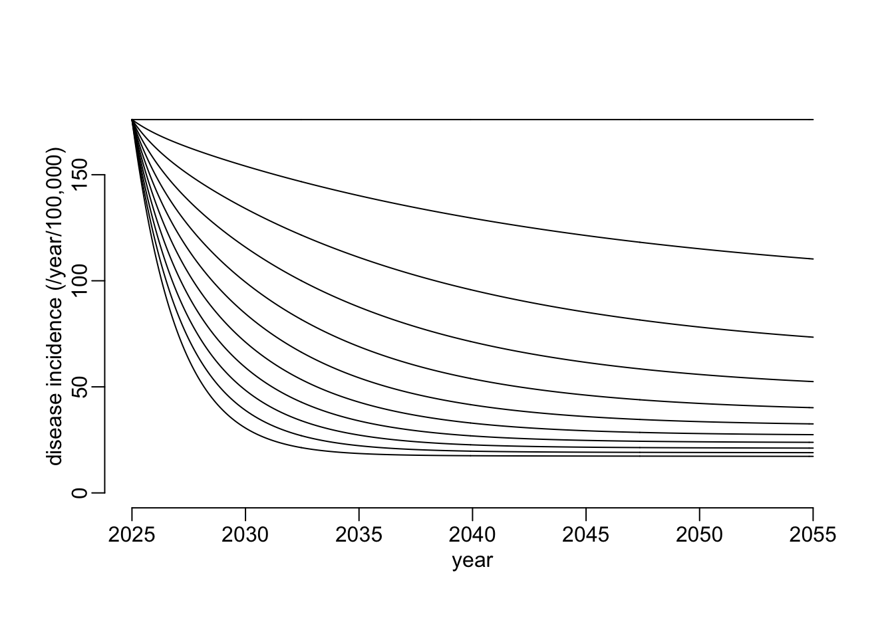